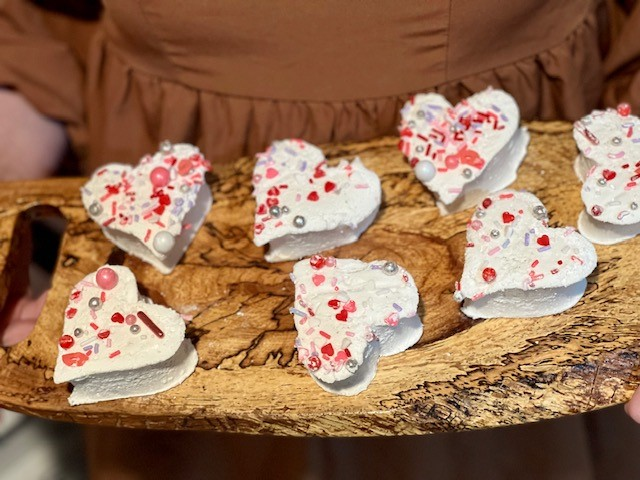

From 2008 to 2014, I was the owner/operator of a small custom bakery. In order to remain profitable,
during a time when the market was flooded with
talented cake artists, I had to find ways to make my product stand-out. I specialized in decorated sugar
cookies and candies and
found that priortizing the quality of ingredients was the best way to retain business, in spite of the
competition.
My homemade marshmallows were one of my best selling products, and one that my friends and family still
request for holidays and special occasions.
The process is actually quite simple. Follow along with me as we make some Valentine's Day themed
Homemade Vanilla Bean Marshmallows!
Vanilla Bean Marshmallows

Tools
- Stand mixer with whisk attachment
- Kitchen scale
- Liquid measuring cup
- Teaspoon
- Small saucepan with lid
- Candy thermometer
- Silicone spatula
- 9x13 casserole dish
- Parchment paper (not pictured)

Ingredients
- 3 TBSP unflavored gelatin
- 1 cup ice cold water, divided
- 12 ounces granulated sugar
- 1/2 cup light corn syrup
- 1/2 cup honey
- 1/4 teaspoon fine sea salt
- 1 TBSP vanilla extract (homeade is best!)
- 1-2 vanilla beans
- 1/4 cup powdered sugar (for dusting)
- 1/4 cup cornstarch (for dusting)
- Non-stick spray

Directions
-
Place the gelatin into the bowl of a stand mixer along with 1/2 cup of the water. You'll also need
to have
your whisk attachment ready.
-Note: You can use a hand-mixer but, unless you love monotonous tasks and long arm work-outs, I don't recommend it.
- In a small saucepan combine the remaining 1/2 cup water, granulated sugar, corn syrup, and salt. Place over medium high heat, cover, and allow to cook for 3 to 4 minutes.
- Uncover, clip a candy thermometer onto the side of the pan, add your vanilla beans (whole), and continue to cook until the mixture reaches 240° F, approximately 7 to 8 minutes. Once the mixture reaches temperature, remove the vanilla beans and immediately remove from the heat.
-
Turn the mixer on low speed and, while running, slowly pour the sugar syrup down the side of the
bowl into the gelatin mixture.
Once you have added all of the syrup, increase the speed to high. Continue to whip until the mixture
becomes very thick and the
sides of the bowl are lukewarm- approximately 12 to 15 minutes.
-
Add the vanilla extract during the last minute of whipping.
-
While the marshmallows finish in the mixer, line a 13 by 9-inch baking pan with parchment paper.
Combine equal parts of
powdered sugar and cornstarch in a small bowl.
-Note: I prefer to use a fine-mesh strainer to eliminate any clumps, but a fork or whisk also works!

-
When ready, pour the mixture into the prepared pan, using a lightly oiled spatula for spreading
evenly
into the pan. Dust the top with the sugar and cornstarch mixture to lightly cover. Reserve the rest
for later.
Allow the marshmallows to sit uncovered for at least 4 hours and up to overnight.

-
Turn the marshmallows out onto a cutting board and cut into shapes using a metal cookie cutter
dusted with the powdered
sugar mixture. Once cut, lightly dust all sides of each marshmallow with the remaining mixture,
using additional if necessary.
Store in an airtight container for up to 3 weeks.
-See below for instructions on decorated marshmallows.

- For sprinkle-covered marshmallows: while the marshmallows are still tacky, spread the
sprinkles across the surface. Once set,
continue as directed above.

- For dipped marshmallows: After cutting, insert a popsicle stick into each marshmallow. Using the stick as a "tool" gently dip each marshmallow into melted chocolate candy coating. (Note: make sure that your melted chocolate is not too hot or you'll risk melting your marshmallows!)

- For sprinkle-covered marshmallows: while the marshmallows are still tacky, spread the
sprinkles across the surface. Once set,
continue as directed above.


Additional Thoughts
Homemade marshmallows will change your world!! Once you've tried them, you'll never go back to
store-bought. If you've never liked marshmallows, these are still worth trying! I can't tell you
how many of my customers told me "I always hated marshmallows until I tried yours"- they really
are
that good!
I do have a few helpful tips that may help you BEFORE you find yourself staring at a
pot of molten sugar
and wondering why you decided to trust a test website:
-
The quality of your ingredients matters! I prefer organic beef gelatin, as it doesn't have
the
"barnyard" odor that most store-bought gelatins have. Homemade vanilla, and whole
vanilla beans, are always preferred; however, if you don't have gallons brewing at all times
(and most don't),
purchase the highest quality pure vanilla extract you can find. Vanilla bean paste can be
substituted for the whole
vanilla beans (and will give you the same great vanilla bean "sparkle"). Just add 1-2 TBSP
of paste to the mixer
when you incorporate the vanilla extract.


-
When it comes to cutting/decorating your marshmallows, you are only limited by your
imagination! Although
most prefer plain or chocolate covered marshmallows, feel free to experiment with any
toppings you prefer! Chopped nuts are always a hit, as well!

-
Don't worry about the "waste" when using cookie cutters. The remaining pieces, and/or any
"imperfect" cuts can be cut into smaller pieces
and will still taste phenomenal! Plus, they're GREAT in hot cocoa!


-
Don't hesitate to use the "fluff" and scraps as bribery! This recipe is fun, and the
chemical transformation is mesmerizing
but, the dishes and mess are *real*. My kids will commit to just about any chore when bribed
with this gooey
goodness!